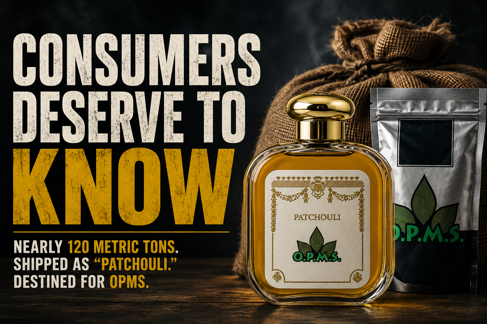

Consumers buying O.P.M.S. kratom products deserve an answer.
Publicly available U.S. import records identify Martian Sales as the consignee or notify party on seven shipments arriving between March 2017 and April 2018. Together, the shipments contained approximately 119,912 kilograms — nearly 120 metric tons — of material described as "Pachauli Powder" or "Patchouli Powder."
Ordinarily, a shipment of patchouli wouldn't be particularly interesting.
Martian Sales isn't an ordinary consignee.
The connection between Martian Sales and O.P.M.S. isn't speculation based on similar addresses or corporate breadcrumbs.
Martian Sales owns the O.P.M.S. trademarks.
Federal court records in Moller v. Martian Sales state that Martian Sales holds the O.P.M.S. trademark and describe the company's role in the O.P.M.S. kratom operation. The defendants themselves represented in the litigation that Martian Sales owned the O.P.M.S. brand and had entered into a processing agreement involving bulk kratom used for O.P.M.S. products.
Trademark records independently show Martian Sales as the owner of numerous O.P.M.S. marks, including O.P.M.S. KRATOM, with the earliest filing dating to 2013.
The import records show seven shipments:
| Arrival | Supplier | Description | Weight |
|---|---|---|---|
| Mar. 27, 2017 | Karunia Jaya Sejahtera | Pachauli Powder | 20,410 kg |
| Mar. 27, 2017 | Karunia Jaya Sejahtera | Pachauli Powder | 21,970 kg |
| Jul. 8, 2017 | Karunia Jaya Sejahtera | Patchouli Powder | 15,132 kg |
| Sept. 25, 2017 | Karunia Jaya Sejahtera | Patchouli Powder | 15,600 kg |
| Nov. 8, 2017 | Karunia Jaya Sejahtera | Patchouli Powder / Good Human Consumption | 15,600 kg |
| Apr. 3, 2018 | Tawon Mas Makmur | Patchouli Powder / Human Consumption | 15,600 kg |
| Apr. 26, 2018 | Tawon Mas Makmur | Patchouli Powder / Foodstuff | 15,600 kg |
| Total | 119,912 kg | ||
All seven records identify Martian Sales.
And then the records get stranger.
The April 3, 2018 record contains an unusual contradiction.
Its standardized product description reads:
Yet the underlying raw cargo description says:
A November 2017 shipment presents a similar problem. Its standardized description includes:
while the underlying raw description contains:
The commodity classifications aren't consistent either.
Different shipments appear under different HS categories, including 121190, 330129, and 090111.
Those classifications cover remarkably different things.
Yet the cargo description still says patchouli powder.
A single odd classification can have an innocent explanation. Import records contain errors. Freight forwarders make mistakes. Commodity classifications can be complicated.
But when nearly 120 metric tons of Indonesian botanical powder destined for the owner of a major kratom brand appears under multiple classifications and conflicting consumption descriptions, asking what the material actually was isn't unreasonable.
It's the obvious question.
We don't know.
That distinction matters.
A bill of lading tells us how cargo was described in shipping records. It does not provide a laboratory analysis establishing the botanical identity of the material inside the containers.
These records therefore do not prove that Martian Sales imported kratom disguised as patchouli.
They also don't prove that the material was actually patchouli.
That's the unanswered question.
And there is an important piece of context.
Federal litigation involving O.P.M.S. describes Martian Sales as having agreements involving the supply and processing of kratom. Court records further state that Martian Sales had a Contract Processing Agreement with Advanced Nutrition involving bulk kratom that ultimately became O.P.M.S. products.
Later O.P.M.S. sourcing and manufacturing reportedly involved other entities, including Nuza and Calibre.
So we know Martian Sales wasn't merely a passive trademark holder completely removed from botanical sourcing.
That makes the historical shipping records relevant.
If the shipments really contained patchouli, there's a straightforward question:
There may be completely ordinary answers.
Consumers should be able to hear them.
There is currently no evidence establishing that O.P.M.S. products being sold today contain material from these 2017–2018 shipments.
The records don't establish that.
They don't even establish that the shipments contained kratom.
But the age of these records raises another consumer question that O.P.M.S. could answer independently:
Consumers routinely receive lot numbers and expiration dates on regulated products precisely because provenance and age matter.
For botanical products, questions about storage conditions, microbial contamination, degradation and traceability aren't trivial.
If current O.P.M.S. products are manufactured from recently imported and fully traceable kratom, showing that should settle the question.
Consumers don't need speculation. They need records.